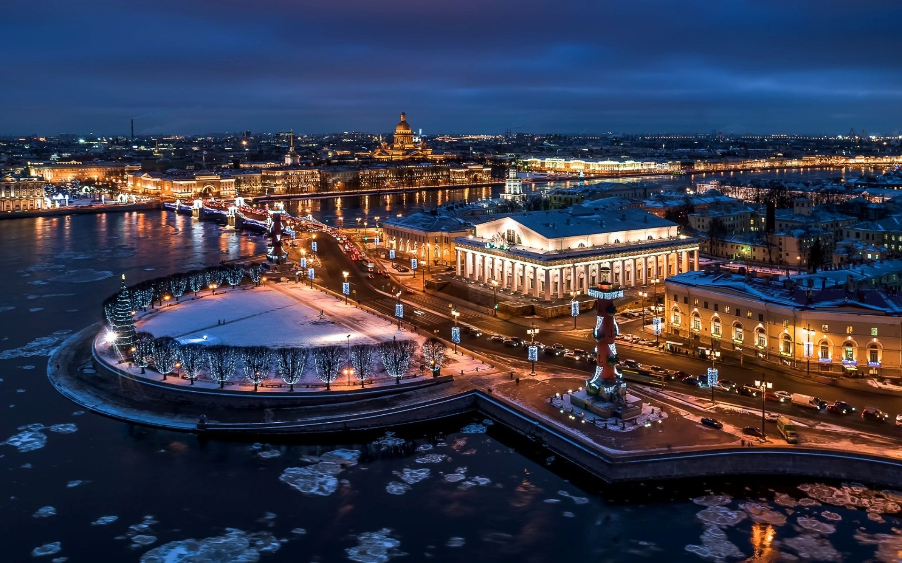
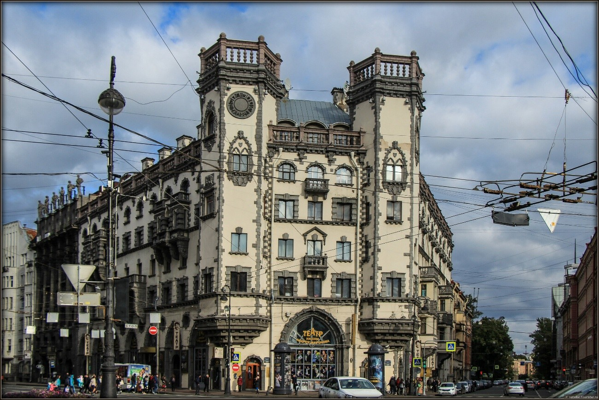

Санкт-Петербург был основан 27 мая 1703 года Императором Петром Великим. С древних времён приневские земли находились в русских владениях, по Неве, проходил знаменитый путь "из варяг в греки”. В XVII веке Россия, однако, утратила эти территории, и они отошли Швеции. В XVII веке Пётр I, одержав победу над шведами, открыл России выход к Балтийскому морю и положил начало новой эпохе развития страны. С 1712 года Санкт-Петербург стал столицей Русского государства, сюда были переведены все органы государственной власти. С начала XVIII века в Санкт-Петербурге стали поселяться немцы, финны, шведы, армяне, татары и представители многих других народностей. Главной магистралью города стал Невский проспект. В течение XVIII–XIX века формировался блестящий, парадный облик Северной столицы.
В 1914 году, в связи с вступлением России в Первую мировую войну, Санкт-Петербург переименовали в Петроград. В 1917 году к власти во главе с Владимиром Лениным приходят большевики, и уже через полгода Петроград перестает быть столицей — отныне это звание принадлежит Москве. В 1924 году после смерти Владимира Ильича город в очередной раз меняет название — на Ленинград. Именно с этим именем будет связана для города одна из самых трагических страниц — девятисотдневная блокада во время Великой Отечественной войны, за время которой от голода, холода, болезней и бомбежек погибло около 800 тысяч жителей Ленинграда. За мужество и героизм населения города и его защитников Ленинград стал первым советским Городом-героем.
После Великой Отечественной Войны, когда стало необходимо в массовом порядке строить жильё, город заметно увеличил свои размеры. Появились не просто новые кварталы, а целые районы, такие как Гражданка, Ржевка-Пороховые, Весёлый Посёлок, Купчино, Автово. В 1991 году городу было возвращено историческое название.

Исаа́киевский собо́р (собор преподо́бного Исаа́кия Далма́тского) — крупнейший православный храм в Санкт-Петербурге. Расположен на Исаакиевской площади. Кафедральный собор Санкт-Петербургской епархии с 1858 по 1929 год. С 1928 года имеет статус музея (Государственный музей "Исаакиевский собор"). Современное здание собора является четвёртым петербургским храмом в честь Исаакия Далматского, возведённым на месте собора, спроектированного Антонио Ринальди. Автором проекта четвёртого собора, которому предназначалось стать главной православной святыней империи, стал архитектор Огюст Монферран. Строительство курировал сам Николай I, председателем Комиссии по строительству собора был Карл Опперман. При возведении здания использовались новые для того времени строительные технологии, что повлияло на дальнейшее развитие архитектуры XIX и XX века. Сооружение здания и работы по его оформлению продолжались с 1818 по 1858 год. Исаакиевский собор считается самой поздней постройкой в стиле классицизма.
Каза́нский собо́р (Собор Казанской иконы Божией Матери) — один из крупнейших храмов Санкт-Петербурга. Построен на Невском проспекте в 1801—1811 годах архитектором Андреем Воронихиным в стиле русского классицизма для хранения чтимого списка чудотворной иконы Божией Матери Казанской. После Отечественной войны 1812 года приобрёл значение памятника русской воинской славы. В 1813 году здесь был похоронен полководец Михаил Илларионович Кутузов и помещены ключи от взятых городов и другие военные трофеи.
Дом компа́нии «Зи́нгер» (с 1938 г. «Дом кни́ги») — историческое здание в Санкт-Петербурге, расположенное по адресу Невский проспект, 28, памятник архитектуры федерального значения. Дом был построен в 1902—1904 годах по проекту архитектора Павла Сюзора для компании «Зингер». Вплоть до революции в здании располагалась штаб-квартира российского представительства «Зингер» и различные конторы-арендаторы. В 1919 году здание национализировали, в него перевели магазин «Петрогосиздата», филиалы различных издательств и редакции газет и журналов, целое крыло занимал государственный комитет цензуры. Название «Дом книги» закрепилось в речи горожан по магазину, работавшему в здании с 1938 года.

Дом с башнями в Санкт-Петербурге, также известный как дом Розенштейна — Белогруда — здание на площади Льва Толстого, обращённое центральной частью к Каменноостровскому проспекту и выходящее боковыми фасадами на Большой проспект и улицу Льва Толстого. Благодаря двум мощным шестигранным башням-эркерам здание стало архитектурной доминантой площади Льва Толстого.
Люблю тебе я, мой город величавый, — Дворцовых фасадов недвижный парад. Твой каждый камень овеян славой, Торцы мостовых и граниты оград. Открыв морей неведомые воды, На радость нам и недругам на страх, Не волей царей, а волею народа Ты гордо встал на невских берегах. Ты помнишь гром орудийной канонады, Руины домов и в предместьях бои. Тяжелые цепи голодной блокады Сорвали могучие руки твои. Красуйся в веках, непобедимый город, В Европу Петром пробитое окно. Ты вечно юн, и на твои просторы Врагу никогда ступить не суждено. Ты был и остался надеждою России От давних времен и до нынешних дней, И нету тебя на планете красивей, И нету тебя на планете родней. Пока гремит полуденная пушка, И белая ночь сияет над Невой, Мне счастья в жизни большего не нужно, Лишь жил бы всегда Великий город мой, Город — герой.Вернуться на главную страницу